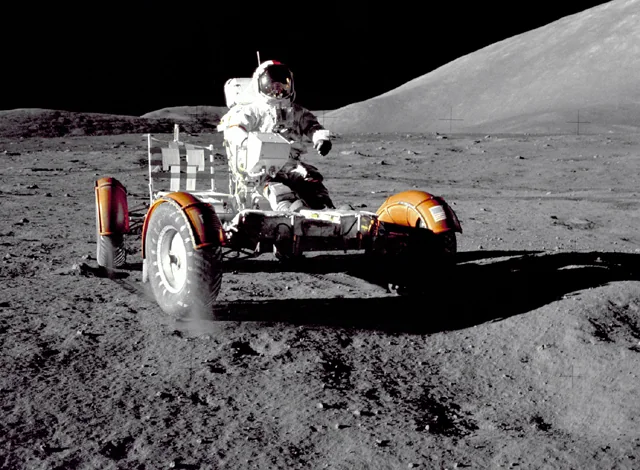

중학교 과학 · 1학년
중1-5힘의 작용
밀고 당기는 모든 것의 규칙
먼저 배운 내용
이 책에서는 여기가 출발점이다.
학습 목표
- 힘의 뜻을 알고, 물체에 작용하는 힘을 크기와 방향을 가진 화살표로 나타낼 수 있다.
- 한 직선 위에서 작용하는 여러 힘의 합력을 구하고, 힘의 평형을 이루는 조건을 설명할 수 있다.
- 중력, 탄성력, 마찰력, 부력의 특징을 크기와 방향으로 설명하고, 질량과 무게를 구별할 수 있다.
- 알짜힘이 0이 아닐 때 물체의 운동 상태가 변함을 알고, 그 예를 '속력 변화', '방향 변화', '둘 다 변화'로 분류할 수 있다.
- 바닥에 놓인 물체 등 여러 사례에서 힘의 평형을 설명하고, 힘의 특징을 이용한 기구나 장치를 설계할 수 있다.
이 단원의 학습 사다리
| 단계 | 무엇을 하나? |
|---|---|
| STEP 1. 이전 학습 다시 보기 | 초등학교 '힘과 우리 생활'에서 배운 밀기·당기기, 무게 재기를 다시 꺼낸다 |
| STEP 2. 기초 다지기 | 힘이 하는 일, 힘의 단위 N, 속력의 뜻을 디딤돌로 놓는다 |
| STEP 3. 핵심 개념 | 화살표 → 합력과 평형 → 중력·탄성력·마찰력·부력 → 알짜힘과 운동 → 생활 속 평형과 장치 설계 |
| STEP 4. 오개념 바로잡기 | "움직이는 물체에는 항상 운동 방향으로 힘이 작용한다?" 같은 착각을 바로잡는다 |
| STEP 5. 다음 단계로 | 가속도 법칙, 작용 반작용, 비스듬한 힘의 합성, 부력의 크기(중3·통합과학·물리학) |
| STEP 6. 생활·산업·진로 | 엘리베이터와 건축 구조, 타이어와 브레이크, 선박과 잠수함, 놀이 기구 |
단원 들어가기
줄다리기를 하는데 두 팀 모두 온 힘을 다해 당기고 있는데도 줄이 꼼짝하지 않는다. 힘이 이렇게 많이 작용하는데 왜 아무 일도 일어나지 않을까? 그러다 한쪽 팀이 조금 더 세게 당기는 순간, 줄이 그쪽으로 끌려가기 시작한다.
책상 위에 놓인 필통은 가만히 있다. 지구가 필통을 아래로 끌어당기는데 왜 떨어지지 않을까? 축구공을 차면 굴러가다 결국 멈추는데, 공을 멈추게 한 것은 누구일까? 무거운 배는 어떻게 물에 뜰까?
이 단원에서는 이 질문들을 힘의 크기와 방향, 그리고 여러 힘을 합친 알짜힘이라는 생각으로 풀어 본다.
STEP 1이전 학습 다시 보기
연계 개념표
| 이전 단원·성취기준 | 그때 배운 것 | 이 단원에서 확장되는 것 |
|---|---|---|
| 초등학교 3∼4학년군 '힘과 우리 생활' | 물체를 밀거나 당기면 물체의 모양이나 움직임이 변한다 | 힘을 크기와 방향을 가진 화살표로 나타내고, 단위 N(뉴턴)으로 크기를 잰다 |
| 초등학교 3∼4학년군 '힘과 우리 생활' | 용수철저울로 물체의 무게를 잰다. 무거운 물체일수록 용수철이 많이 늘어난다 | 무게는 중력의 크기이고, 용수철이 늘어나는 길이는 힘의 크기에 비례한다(탄성력) |
| 초등학교 3∼4학년군 '힘과 우리 생활' | 수평 잡기, 지레 같은 도구를 이용하면 힘을 편리하게 쓸 수 있다 | 여러 힘이 함께 작용할 때 힘의 평형 조건을 따지고, 힘의 특징을 이용한 장치를 설계한다 |
| 초등학교 5∼6학년군 '물체의 운동' | 속력은 일정한 시간 동안 물체가 이동한 거리이다 | 힘을 받은 물체의 속력과 운동 방향이 어떻게 변하는지 분류한다 |
준비 운동 (사전 진단)
Q1. 다음 중 힘이 작용하여 생긴 변화가 아닌 것은? ① 찰흙을 눌러 납작해졌다. ② 굴러가던 공이 손에 잡혀 멈췄다. ③ 얼음이 햇볕에 녹았다. ④ 날아오던 공을 배트로 쳐서 방향이 바뀌었다.
Q2. 용수철저울에 추 1개를 매달았더니 용수철이 2 cm 늘어났다. 같은 추 2개를 매달면 몇 cm 늘어날까?
Q3. 달에 가면 우리 몸의 무게는 지구에서와 같다. (O / X)
정답 및 해설
Q1. ③ — 얼음이 녹은 것은 열에너지를 흡수해 상태가 변한 것이다(중1 「물질의 상태 변화」). ①은 모양, ②는 속력, ④는 운동 방향이 힘에 의해 변했다.
Q2. 4 cm — 매단 무게가 2배가 되면 늘어난 길이도 2배가 된다.
Q3. X — 무게는 행성이나 위성이 끌어당기는 힘의 크기이다. 달은 지구보다 약하게 끌어당기므로 무게가 약 로 줄어든다. 하지만 몸을 이루는 물질의 양(질량)은 그대로이다.
STEP 2기초 다지기
① 힘이란 무엇인가
과학에서 힘(force) 은 물체의 모양이나 운동 상태를 변하게 하는 원인이다.
| 힘이 하는 일 | 예 |
|---|---|
| 모양을 바꾼다 | 고무공을 누르면 찌그러진다, 찰흙을 빚는다, 용수철을 당기면 늘어난다 |
| 운동 상태를 바꾼다 | 정지한 공을 차면 굴러간다, 달리는 자전거가 브레이크로 멈춘다, 날아오는 공을 치면 방향이 바뀐다 |
| 둘 다 바꾼다 | 테니스공을 라켓으로 치면 공이 찌그러지면서 튕겨 나간다 |
② 힘의 단위 N(뉴턴)
힘의 크기는 N(뉴턴) 이라는 단위로 나타낸다. 영국의 과학자 뉴턴의 이름을 딴 것이다.
- 지구에서 질량 약 100 g인 물체(사과 한 개 정도)를 손바닥 위에 올려놓았을 때 손이 받는 힘이 약 1 N이다.
- 힘의 크기는 용수철저울로 잴 수 있다. 용수철이 늘어난 정도로 힘의 크기를 읽는다.
③ 속력: 얼마나 빠른가
힘을 받은 물체의 운동을 이야기하려면 '빠르기'를 나타낼 말이 필요하다. 속력(speed) 은 물체가 일정한 시간 동안 이동한 거리이다.
- 10초 동안 50 m를 달린 학생의 속력은 이다.
- 이 단원에서는 속력이 '빨라졌는지, 느려졌는지, 그대로인지'와 '운동 방향이 바뀌었는지'만 따지면 된다.
④ 운동 상태 = 속력 + 운동 방향
물체의 운동 상태는 속력과 운동 방향 두 가지로 정해진다. 둘 중 하나라도 바뀌면 운동 상태가 변한 것이다.
STEP 3핵심 개념
① 힘을 화살표로 나타내기 [9과05-01]
힘은 크기와 방향을 함께 가지므로 화살표로 나타내면 편리하다.
| 화살표의 요소 | 나타내는 것 |
|---|---|
| 화살표의 시작점 | 힘이 작용하는 점(작용점) |
| 화살표의 방향 | 힘의 방향 |
| 화살표의 길이 | 힘의 크기 (길이가 2배면 힘도 2배) |
예 1 cm를 2 N으로 약속하면, 상자를 오른쪽으로 6 N의 힘으로 미는 것은 상자에서 시작해 오른쪽을 향하는 3 cm 길이의 화살표로 나타낸다.
예제 1
1 cm를 10 N으로 약속하였다. 다음 힘을 나타내는 화살표의 방향과 길이를 쓰시오. (1) 수레를 앞쪽으로 30 N의 힘으로 민다. (2) 공을 위쪽으로 15 N의 힘으로 들어 올린다.
풀이 (1) 앞쪽 방향, cm (2) 위쪽 방향, cm
바로 확인방금 읽은 내용, 바로 점검하기
- 짝짓기: 화살표의 (1) 시작점 (2) 방향 (3) 길이 는 각각 무엇을 나타내는가?
- 1 cm를 5 N으로 약속하면, 15 N의 힘은 몇 cm 길이의 화살표로 그리는가?
- (O/X) 화살표의 길이가 2배이면 힘의 크기도 2배이다.
정답
- (1) 힘이 작용하는 점(작용점) (2) 힘의 방향 (3) 힘의 크기
- 3 cm —
- O — 화살표의 길이는 힘의 크기에 비례하게 그린다.
② 여러 힘을 합치기 — 합력과 힘의 평형 [9과05-01]
한 물체에 여러 힘이 동시에 작용할 때, 이 힘들을 모두 합친 하나의 힘을 합력이라고 하고, 물체에 실제로 작용하는 합력을 알짜힘(net force) 이라고 한다. 중학교에서는 한 직선 위에 나란하게 작용하는 힘만 합친다.
| 경우 | 합력의 크기 | 합력의 방향 | 예 |
|---|---|---|---|
| 두 힘이 같은 방향 | 두 힘의 크기를 더한다 | 두 힘과 같은 방향 | 두 사람이 같은 쪽으로 수레를 민다 |
| 두 힘이 반대 방향 | 큰 힘에서 작은 힘을 뺀다 | 큰 힘의 방향 | 줄다리기 |
| 크기가 같고 반대 방향 | 0 | 없음 | 비긴 줄다리기 |
힘의 평형
한 물체에 작용하는 힘들의 합력이 0일 때, 이 힘들은 평형을 이룬다고 한다. 두 힘이 평형을 이루는 조건은 다음 세 가지이다.
- 힘의 평형을 이루는 물체는 운동 상태가 변하지 않는다. 정지해 있던 물체는 계속 정지해 있다.
- 줄다리기에서 줄이 움직이지 않는 것은 힘이 작용하지 않아서가 아니라, 양쪽 힘이 평형을 이루어 알짜힘이 0이기 때문이다.
예제 2
줄다리기에서 왼쪽 팀은 왼쪽으로 600 N, 오른쪽 팀은 오른쪽으로 650 N의 힘으로 줄을 당긴다. (1) 줄에 작용하는 알짜힘의 크기와 방향은? (2) 오른쪽 팀에서 50 N의 힘으로 당기던 학생 한 명이 빠지면 어떻게 될까?
풀이 (1) 반대 방향이므로 , 오른쪽 방향. 줄은 오른쪽으로 끌려가기 시작한다. (2) 오른쪽 팀이 이 되어 양쪽 힘이 같아진다. 알짜힘이 0이므로 힘의 평형을 이룬다.
예제 3
상자를 철수는 오른쪽으로 20 N, 영희도 오른쪽으로 30 N의 힘으로 밀고, 민수는 왼쪽으로 40 N의 힘으로 민다. 상자에 작용하는 알짜힘은? (마찰은 생각하지 않는다.)
풀이 오른쪽 힘의 합: . 왼쪽 힘: . 알짜힘 , 오른쪽 방향.
바로 확인방금 읽은 내용, 바로 점검하기
- 한 물체에 오른쪽으로 4 N, 오른쪽으로 6 N의 힘이 작용한다. 알짜힘의 크기와 방향은?
- 한 물체에 오른쪽으로 7 N, 왼쪽으로 7 N의 힘이 작용한다. 알짜힘은?
- (O/X) 줄다리기에서 줄이 움직이지 않으면 줄에는 힘이 작용하지 않는 것이다.
- 빈칸: 두 힘이 평형을 이루려면 두 힘의 크기가 ( ), 방향이 ( )이며, 같은 물체에 같은 직선 위에서 작용해야 한다.
정답
- 10 N, 오른쪽 — 같은 방향이므로 더한다.
- 0 — 크기가 같고 방향이 반대이므로 힘의 평형을 이룬다.
- X — 양쪽에서 큰 힘이 작용하지만 평형을 이루어 알짜힘이 0일 뿐이다.
- 같고, 반대
③ 중력 — 지구가 끌어당기는 힘 [9과05-02]
손에서 놓은 공은 떨어지고, 던져 올린 공도 결국 땅으로 돌아온다. 질량을 가진 물체 사이에 서로 끌어당기는 힘이 작용하는데, 지구가 물체를 끌어당기는 힘을 중력(gravity) 이라고 한다.
| 특징 | 내용 |
|---|---|
| 방향 | 지구 중심 방향(우리가 서 있는 곳에서는 연직 아래 방향) |
| 크기 | 물체의 질량이 클수록 크다(질량에 비례) |
| 작용 | 물체에 닿지 않아도, 떨어져 있어도 작용한다 |
| 다른 천체 | 달·화성 같은 다른 천체도 물체를 끌어당기며, 그 크기는 천체마다 다르다 |
지구는 둥글기 때문에 '아래'의 방향은 지구 어디에서나 지구 중심을 향한다. 그래서 지구 반대편 사람들도 떨어지지 않고 서 있을 수 있다.
무게와 질량은 다르다
| 구분 | 질량(mass) | 무게(weight) |
|---|---|---|
| 뜻 | 물체가 가진 고유한 양 | 물체에 작용하는 중력의 크기 |
| 단위 | g, kg | N(뉴턴) |
| 장소에 따라 | 변하지 않는다 | 변한다(달에서는 지구의 약 ) |
| 측정 도구 | 윗접시저울, 양팔저울(기준 물체와 비교) | 용수철저울, 체중계 |
지구에서 질량 1 kg인 물체의 무게는 약 9.8 N이다.
실제로 달에 간 우주인은 지구에서보다 훨씬 가벼운 몸으로 걷고 뛰며 월면차를 몰았다.

예제 4
질량 60 kg인 우주 비행사가 있다. (1) 지구에서 이 사람의 무게는? (2) 달에서의 질량과 무게는? (달의 중력은 지구의 로 계산한다.)
풀이 (1) (2) 질량은 장소와 관계없으므로 60 kg 그대로이다. 무게는 이다.
바로 확인방금 읽은 내용, 바로 점검하기
- 지구에서 질량 10 kg인 물체의 무게는 몇 N인가?
- (O/X) 달에 가면 물체의 질량이 지구의 로 줄어든다.
- 달에서도 지구에서와 같은 값을 가리키는 저울은? (용수철저울 / 양팔저울)
- 빈칸: 중력은 언제나 ( ) 방향으로 작용한다.
정답
- 98 N —
- X — 질량은 장소에 따라 변하지 않는다. 줄어드는 것은 무게이다.
- 양팔저울 — 양쪽 접시가 똑같이 약해진 중력을 받으므로 평형은 그대로이다.
- 지구 중심
④ 탄성력 — 원래 모양으로 돌아가려는 힘 [9과05-02]
용수철을 당기면 늘어나고, 손을 놓으면 원래 길이로 돌아간다. 이처럼 힘을 받아 모양이 변했다가 힘을 없애면 원래 모양으로 돌아가는 성질을 탄성이라고 하고, 이런 성질을 가진 물체를 탄성체라고 한다. 모양이 변한 탄성체가 원래 모양으로 돌아가려는 힘을 탄성력(elastic force) 이라고 한다.
| 특징 | 내용 |
|---|---|
| 방향 | 탄성체를 변형시킨 힘과 반대 방향 (늘이면 줄어드는 쪽, 누르면 늘어나는 쪽) |
| 크기 | 탄성체를 변형시킨 힘의 크기와 같다. 변형된 정도(늘어나거나 줄어든 길이)가 클수록 크다 |
| 예 | 용수철, 고무줄, 트램펄린, 활시위, 침대 매트리스, 볼펜 속 용수철 |
용수철이 늘어난 길이는 힘에 비례한다
용수철에 추를 하나씩 더 매달며 늘어난 길이를 재면 다음과 같은 결과를 얻는다.
| 매단 추의 무게(N) | 0 | 1 | 2 | 3 | 4 |
|---|---|---|---|---|---|
| 늘어난 길이(cm) | 0 | 2 | 4 | 6 | 8 |
- 무게가 2배, 3배가 되면 늘어난 길이도 2배, 3배가 된다. 용수철이 늘어난 길이는 매단 물체의 무게(용수철에 작용한 힘)에 비례한다.
- 그래프로 그리면 원점을 지나는 직선이 된다. 용수철저울은 이 성질을 이용해 눈금을 고르게 새긴 도구이다.
- 단, 너무 큰 힘을 주면 용수철이 늘어난 채로 돌아오지 않는다(탄성 한계). 이때부터는 비례 관계가 성립하지 않는다.
예제 5
위 표의 용수철에 어떤 물체를 매달았더니 10 cm 늘어났다. 이 물체의 무게는 몇 N인가? (탄성 한계를 넘지 않았다.)
풀이 1 N에 2 cm씩 늘어나므로, 10 cm 늘어났다면 이다.
바로 확인방금 읽은 내용, 바로 점검하기
- 위 표의 용수철에 3.5 N인 물체를 매달면 몇 cm 늘어나는가?
- (O/X) 용수철을 아래로 당기면 탄성력도 아래쪽으로 작용한다.
- 빈칸: 너무 큰 힘을 주어 용수철이 원래 길이로 돌아오지 않게 되는 한계를 ( )라고 한다.
정답
- 7 cm — 1 N에 2 cm씩이므로
- X — 탄성력은 변형시킨 힘과 반대 방향, 즉 위쪽으로 작용한다.
- 탄성 한계
⑤ 마찰력 — 미끄러짐을 방해하는 힘 [9과05-02]
바닥에 놓인 상자를 밀면 잘 밀리지 않고, 굴러가던 공도 결국 멈춘다. 두 물체가 닿아 있는 면에서 물체의 운동을 방해하는 힘을 마찰력(friction) 이라고 한다.
| 특징 | 내용 |
|---|---|
| 방향 | 물체가 운동하는(또는 운동하려는) 방향과 반대 방향 |
| 크기 ① | 접촉면이 거칠수록 크다 (얼음판 < 아스팔트 < 모래밭) |
| 크기 ② | 물체가 접촉면을 누르는 힘이 클수록(물체가 무거울수록) 크다 |
| 크기 ③ | 같은 물체라면 접촉면의 넓이와는 거의 관계없다 |
마찰력이 필요한 곳, 줄여야 하는 곳
| 마찰력을 크게 하는 경우 | 마찰력을 작게 하는 경우 |
|---|---|
| 운동화 밑창에 울퉁불퉁한 무늬를 만든다 | 기계의 회전 부분에 윤활유를 바른다 |
| 눈길에서 자동차 바퀴에 체인을 감는다 | 스키·스케이트 날을 매끄럽게 한다 |
| 겨울철 빙판길에 모래를 뿌린다 | 무거운 짐 아래에 바퀴를 단다 |
| 계단 끝에 미끄럼 방지 패드를 붙인다 | 미끄럼틀 표면을 매끄럽게 만든다 |
| 자전거 브레이크 고무가 바퀴를 꽉 잡는다 | 서랍 레일에 작은 구슬(볼 베어링)을 넣는다 |
예제 6
같은 나무 도막을 다음과 같이 끌 때, 마찰력이 가장 큰 경우는? (가) 매끄러운 유리판 위에서 나무 도막 1개를 끈다. (나) 사포 위에서 나무 도막 1개를 끈다. (다) 사포 위에서 나무 도막 2개를 포개어 끈다.
풀이 (다). 접촉면이 거친 사포에서 마찰력이 크고, 나무 도막을 포개면 면을 누르는 힘이 커지므로 마찰력이 더 커진다.
바로 확인방금 읽은 내용, 바로 점검하기
- (O/X) 마찰력은 물체가 운동하는(또는 운동하려는) 방향과 반대 방향으로 작용한다.
- 마찰력을 크게 하는 예를 고르시오. 기계에 윤활유 바르기, 운동화 밑창의 울퉁불퉁한 무늬, 서랍 레일의 볼 베어링
- 눈 위에서 오른쪽으로 미끄러지는 썰매에 작용하는 마찰력의 방향은?
정답
- O
- 운동화 밑창의 울퉁불퉁한 무늬 — 접촉면을 거칠게 한다. 나머지 둘은 마찰력을 줄인다.
- 왼쪽 — 운동 방향과 반대이다.
⑥ 부력 — 액체나 기체가 떠받치는 힘 [9과05-02]
수영장에 들어가면 몸이 가볍게 느껴지고, 물속에서는 무거운 친구도 쉽게 들어 올릴 수 있다. 액체나 기체 속에 있는 물체를 위쪽으로 밀어 올리는 힘을 부력(buoyant force) 이라고 한다.
| 특징 | 내용 |
|---|---|
| 방향 | 중력과 반대 방향(위쪽) |
| 크기 | 물체가 액체에 잠긴 부피가 클수록 크다 |
| 측정 | 부력의 크기 = (공기 중에서 잰 무게) − (물속에서 잰 무게) |
| 예 | 배, 구명조끼, 튜브, 열기구, 헬륨 풍선, 물속에서 가벼워지는 몸 |
- 물체를 물에 조금씩 더 담글수록 용수철저울의 눈금이 줄어든다. 잠긴 부피가 커질수록 부력이 커지기 때문이다.
- 물체가 완전히 잠긴 뒤에는 더 깊이 넣어도 눈금이 변하지 않는다. 잠긴 부피가 더 늘지 않기 때문이다.
- 물에 뜬 물체는 부력과 중력이 평형을 이룬다. 배가 뜨는 것도, 구명조끼가 몸을 띄우는 것도 이 때문이다.
부력은 액체뿐 아니라 기체 속에서도 작용한다. 커다란 열기구는 주위 공기가 떠받치는 부력으로 하늘에 뜬다.
예제 7
어떤 돌을 용수철저울에 매달아 공기 중에서 재니 12 N, 물속에 완전히 담가 재니 8 N이었다. (1) 돌이 받는 부력의 크기와 방향은? (2) 이 돌을 물속에서 두 배 깊이로 내려도 완전히 잠긴 상태라면 저울의 눈금은?
풀이 (1) , 위쪽 방향. (2) 완전히 잠긴 뒤에는 잠긴 부피가 같으므로 부력도 같다. 눈금은 그대로 8 N이다.
네 가지 힘 한눈에 비교
| 힘 | 방향 | 크기를 결정하는 것 | 닿아야 작용하나? |
|---|---|---|---|
| 중력 | 지구 중심 방향(아래) | 물체의 질량 | 아니다 |
| 탄성력 | 변형시킨 힘의 반대 방향 | 변형된 정도 | 그렇다 |
| 마찰력 | 운동(하려는) 방향의 반대 | 접촉면의 거칠기, 누르는 힘 | 그렇다 |
| 부력 | 중력의 반대 방향(위) | 잠긴 부피 | 그렇다(액체·기체에 잠겨야) |
바로 확인방금 읽은 내용, 바로 점검하기
- 어떤 물체를 용수철저울로 재니 공기 중에서 10 N, 물속에 완전히 담그니 7 N이었다. 부력의 크기와 방향은?
- (O/X) 물에 완전히 잠긴 물체를 더 깊이 넣으면 부력이 더 커진다.
- 중력, 탄성력, 마찰력, 부력 중 물체에 닿지 않아도 작용하는 힘은?
정답
- 3 N, 위쪽 —
- X — 완전히 잠긴 뒤에는 잠긴 부피가 같으므로 부력도 같다.
- 중력
⑦ 알짜힘이 0이 아니면 운동 상태가 변한다 [9과05-03]
알짜힘이 0이 아닐 때 운동 상태가 변하는 모습은 세 가지로 나눌 수 있다.
| 분류 | 알짜힘의 방향 | 사례 |
|---|---|---|
| 속력만 변한다 | 운동 방향과 같은 방향 → 빨라진다 | 미끄럼틀을 내려오는 아이, 페달을 밟아 빨라지는 자전거, 떨어지는 사과 |
| 운동 방향과 반대 방향 → 느려진다 | 브레이크를 밟은 자동차, 굴러가다 멈추는 공, 비탈길을 올라가며 느려지는 수레 | |
| 운동 방향만 변한다 | 운동 방향과 나란하지 않아 운동 방향을 옆으로 꺾는다(원을 그리며 돌 때는 원의 중심 쪽으로 당긴다) | 일정한 빠르기로 도는 회전목마, 줄에 매달아 일정한 빠르기로 돌리는 공 |
| 속력과 방향이 모두 변한다 | 운동 방향과 나란하지 않아 운동 방향을 꺾으면서 속력도 바꾼다 | 비스듬히 던져 올린 공, 골대 앞에서 휘어지며 떨어지는 축구공, 그네, 바이킹 |
예제 8
다음 운동을 '속력만 변함', '방향만 변함', '속력과 방향이 모두 변함'으로 분류하시오. (1) 정지해 있다가 출발하는 버스 (2) 볼링 핀에 부딪혀 방향이 꺾이며 느려진 볼링공 (3) 일정한 빠르기로 도는 대관람차의 칸 (4) 수평으로 던져 포물선을 그리며 떨어지는 공
풀이 (1) 속력만 변함 (2) 속력과 방향이 모두 변함 (3) 방향만 변함 (4) 속력과 방향이 모두 변함
바로 확인방금 읽은 내용, 바로 점검하기
- 브레이크를 잡아 곧게 달리던 자전거가 느려졌다. '속력만 변함', '방향만 변함', '둘 다 변함' 중 무엇인가?
- (O/X) 알짜힘이 0이면 움직이던 물체는 점점 느려지다가 멈춘다.
- 알짜힘의 방향이 운동 방향과 반대이면 물체의 속력은 어떻게 되는가?
정답
- 속력만 변함 — 곧게 달리므로 방향은 그대로이다.
- X — 알짜힘이 0이면 같은 빠르기로 같은 방향으로 계속 움직인다.
- 느려진다.
⑧ 생활 속 힘의 평형과 장치 설계 [9과05-04]
바닥에 놓인 물체 — 떠받치는 힘
책상 위의 책에는 중력이 아래로 작용한다. 그런데도 책이 정지해 있으므로, 알짜힘이 0이어야 한다. 그렇다면 위쪽으로 작용하는 힘이 있어야 한다. 이것이 책상(바닥)이 물체를 떠받치는 힘이다.
- 책상이 책을 떠받치는 힘은 위쪽, 크기는 책의 무게와 같다.
- 떠받치는 힘은 바닥이 아주 조금 눌려 원래대로 돌아가려는 성질(탄성) 때문에 생긴다. 트램펄린 위에 서 있으면 쉽게 느낄 수 있다.
| 상황 | 작용하는 힘 | 평형 관계 |
|---|---|---|
| 책상 위에 놓인 책 | 중력(아래), 책상이 떠받치는 힘(위) | 두 힘의 크기가 같다 |
| 천장에 매달린 전등 | 중력(아래), 줄이 당기는 힘(위) | 두 힘의 크기가 같다 |
| 용수철에 매달려 정지한 추 | 중력(아래), 탄성력(위) | 두 힘의 크기가 같다 |
| 물에 떠 있는 배 | 중력(아래), 부력(위) | 두 힘의 크기가 같다 |
| 밀어도 움직이지 않는 무거운 상자 | 미는 힘(앞), 마찰력(뒤) / 중력(아래), 떠받치는 힘(위) | 가로 방향과 세로 방향에서 각각 평형 |
| 하늘에 떠 정지한 열기구 | 중력(아래), 부력(위) | 두 힘의 크기가 같다 |
예제 9
질량 2 kg인 상자가 바닥에 놓여 있다. (1) 상자에 작용하는 중력의 크기는? (2) 바닥이 상자를 떠받치는 힘의 크기와 방향은? (3) 상자를 오른쪽으로 5 N으로 밀었는데 움직이지 않았다. 마찰력의 크기와 방향은?
풀이 (1) (2) 상자가 정지해 있으므로 중력과 평형을 이룬다. 19.6 N, 위쪽 (3) 움직이지 않으므로 미는 힘과 평형을 이룬다. 5 N, 왼쪽
힘의 특징을 이용한 기구와 장치
| 이용한 힘 | 기구·장치 | 어떻게 이용하나? |
|---|---|---|
| 중력 | 다림추(수직 확인), 물시계, 미끄럼틀 | 중력 방향이 항상 아래쪽인 점, 아래로 끌어당기는 점 |
| 탄성력 | 용수철저울, 트램펄린, 자동차 완충 장치, 집게, 활 | 변형된 정도에 따라 힘이 커지는 점, 원래대로 돌아가는 점 |
| 마찰력 | 브레이크, 미끄럼 방지 장갑, 볼 베어링 | 운동을 멈추게 하는 점, 마찰을 줄여 잘 굴러가게 하는 점 |
| 부력 | 구명조끼, 낚시찌, 튜브, 열기구 | 잠긴 부피가 클수록 부력이 커지는 점 |
장치 설계 절차
- 문제 정하기: 해결하고 싶은 생활 속 불편함을 정한다. (예: 계단에서 무거운 짐을 옮기기 힘들다.)
- 힘 분석하기: 어떤 힘이 작용하는지 화살표로 그리고, 줄이거나 키워야 할 힘을 찾는다.
- 아이디어 내기: 네 가지 힘 중 무엇을 어떻게 이용할지 정한다.
- 설계도 그리기·만들기: 재료와 크기를 정해 시제품을 만든다.
- 시험하고 고치기: 실제로 써 보고 문제점을 찾아 개선한다.
예제 10
비 오는 날 우산꽂이에서 우산을 꺼낼 때 다른 우산이 함께 딸려 나와 불편하다. 힘의 특징을 이용해 해결 방법을 하나 제안하시오.
풀이(예시) 우산꽂이의 칸마다 고무 패킹을 달아 우산과 칸 사이의 마찰력을 조절한다. 우산을 세게 당기면 빠지지만 옆 우산과 부딪혀도 쉽게 딸려 나오지 않는다. 또는 칸 아래에 용수철을 달아 우산을 살짝 밀어 올리면(탄성력), 꺼낼 우산만 손잡이가 높아져 쉽게 잡을 수 있다.
바로 확인방금 읽은 내용, 바로 점검하기
- 무게가 20 N인 전등이 천장에 줄로 매달려 정지해 있다. 줄이 전등을 당기는 힘의 크기와 방향은?
- (O/X) 밀어도 움직이지 않는 상자에서는 마찰력이 미는 힘보다 크다.
- 빈칸: 책상 위에 놓인 책에는 중력과 책상이 책을 ( ) 힘이 평형을 이룬다.
정답
- 20 N, 위쪽 — 정지해 있으므로 중력과 평형을 이룬다.
- X — 정지해 있으면 마찰력과 미는 힘의 크기가 같다.
- 떠받치는
STEP 4오개념 바로잡기
| 흔한 오개념 | 올바른 개념 | 왜 그럴까? |
|---|---|---|
| 정지한 물체에는 힘이 작용하지 않는다 | 정지한 물체에도 여러 힘이 작용하며, 그 알짜힘이 0일 뿐이다 | 책상 위의 책에는 중력과 떠받치는 힘이 함께 작용한다 |
| 움직이는 물체에는 항상 운동 방향으로 힘이 작용한다 | 알짜힘이 0이면 움직이던 물체는 같은 빠르기로 계속 움직인다 | 위로 던진 공이 올라가는 동안 받는 힘은 중력(아래)뿐이다. 그래서 점점 느려진다 |
| 질량과 무게는 같은 것이다 | 질량은 물질의 양(kg), 무게는 중력의 크기(N)이다 | 달에서 질량은 그대로이지만 무게는 약 이 된다 |
| 밀어도 안 움직이는 것은 마찰력이 미는 힘보다 크기 때문이다 | 정지해 있으면 마찰력과 미는 힘의 크기가 같다 | 마찰력이 더 크면 상자가 반대쪽으로 움직여야 한다 |
| 무거운 물체는 물에 가라앉고 가벼운 물체는 뜬다 | 뜨고 가라앉음은 부력과 중력의 크기 비교로 정해진다 | 수만 톤의 배도 잠긴 부피가 커서 큰 부력을 받아 뜬다. 작은 쇠못은 가라앉는다 |
| 마찰력은 항상 나쁜 힘이다 | 마찰력이 있어야 걷고, 멈추고, 물건을 잡을 수 있다 | 빙판에서 걷기 어려운 것은 마찰력이 작기 때문이다 |
| 중력은 공중에 있는 물체에만 작용한다 | 중력은 땅 위·물속·공중 어디서나 작용한다 | 바닥 위 물체도 중력을 받지만 떠받치는 힘과 평형을 이루어 정지해 있다 |
STEP 5다음 단계로 한 걸음 더
다음 학년·과목과의 연결
| 학년·과목 | 단원 | 이어지는 내용 |
|---|---|---|
| 중1 | 「기체의 성질」 | 일정한 면적에 작용하는 힘인 압력을 배우고, 기체 입자의 충돌로 생기는 힘을 설명한다 |
| 중3 | 「운동과 에너지」 | 속력이 일정하게 변하는 운동, 자유 낙하에서 중력에 의해 속력이 1초마다 9.8 m/s씩 증가함을 배운다. 힘이 한 일과 에너지로 이어진다 |
| 통합과학1 | 「중력과 운동」 | 낙하하는 물체와 지구 주위를 도는 인공위성이 모두 중력에 의해 지구 중심 방향으로 가속되는 운동임을 배운다 |
| 통합과학1 | 「운동량과 충격량」 | 알짜힘이 0이면 가속되지 않는다는 관성을 배우고, 힘을 받는 시간까지 고려한 충격량으로 안전장치를 설명한다 |
| 물리학(일반 선택) | 「힘과 에너지」 | 뉴턴 운동 법칙(관성·가속도·작용 반작용), 돌림힘과 평형, 운동량 보존을 정량적으로 다룬다 |
| 역학과 에너지(진로 선택) | 「시공간과 운동」 | 비스듬히 던진 물체의 운동, 원운동, 행성의 운동을 힘으로 분석한다 |
① 알짜힘이 클수록 운동 상태가 빨리 변한다 — 가속도 법칙
이 단원에서는 '알짜힘이 0이 아니면 운동 상태가 변한다'까지만 배웠다. 고등학교 물리학에서는 얼마나 빨리 변하는지를 식으로 나타낸다. 1초 동안 속도가 변하는 정도를 가속도 라 하면, 알짜힘 , 질량 과 다음 관계가 있다.
같은 힘이면 질량이 큰 물체일수록 운동 상태가 덜 변한다. 빈 수레보다 짐을 가득 실은 수레를 출발시키기 어려운 까닭이다.
② 작용과 반작용 — 힘은 언제나 쌍으로
STEP 2에서 '힘은 두 물체 사이에서 작용한다'고 했다. 물리학에서는 A가 B에 힘을 주면 B도 A에 크기가 같고 방향이 반대인 힘을 준다는 작용 반작용 법칙을 배운다. 벽을 밀면 벽도 나를 밀고, 로켓이 가스를 뒤로 밀면 가스가 로켓을 앞으로 민다.
이것은 이 단원의 '힘의 평형'과 헷갈리기 쉽다. 힘의 평형은 한 물체에 작용하는 두 힘, 작용 반작용은 서로 다른 두 물체에 각각 작용하는 두 힘이다. 책상 위 책에서 '중력'과 '책상이 떠받치는 힘'은 평형 관계이지, 작용 반작용 관계가 아니다. 이 떠받치는 힘은 고등학교에서 수직 항력이라고 부른다.
③ 비스듬한 힘의 합성
이 단원에서는 한 직선 위의 힘만 더했다. 고등학교에서는 두 힘이 비스듬하게 작용할 때 두 화살표로 평행사변형을 그려 그 대각선으로 합력을 구한다. 이렇게 크기와 방향을 함께 다루는 양을 벡터라고 한다.
힘과 운동 방향 사이의 각도도 따진다. 알짜힘이 운동 방향과 수직이면 속력은 그대로이고 방향만 바뀌며(일정한 빠르기로 도는 원운동), 비스듬하면 속력과 방향이 함께 바뀐다. 통합과학1 「중력과 운동」에서는 지구 주위를 도는 인공위성이 지구 중심 방향의 중력을 받아 이런 원운동을 한다는 것을 배운다.
④ 부력의 크기는 얼마일까 — 아르키메데스 원리
이 단원에서는 '잠긴 부피가 클수록 부력이 크다'고 배웠다. 더 정확히는 부력의 크기는 물체가 밀어낸 액체의 무게와 같다(아르키메데스 원리). 그래서 같은 부피라도 물보다 무거운 바닷물에서 부력이 조금 더 크다.
지금 vs 다음 단계
| 구분 | 중1 「힘의 작용」 | 중3·통합과학 | 고등학교 물리학 |
|---|---|---|---|
| 힘의 합성 | 한 직선 위의 힘을 더하고 뺀다 | 알짜힘과 관성 | 비스듬한 힘을 벡터로 합성 |
| 힘과 운동 | 알짜힘 ≠ 0이면 운동 상태 변화(분류) | 속력 변화 그래프, 자유 낙하, 충격량 | 로 가속도 계산 |
| 중력 | 무게 = 9.8 × 질량 | 중력에 의한 낙하·원운동 | 만유인력, 행성의 운동 |
| 평형 | 두 힘의 평형 | 관성 법칙 | 돌림힘까지 고려한 평형, 작용 반작용 |
STEP 6생활·산업·진로 연결
사례 1. 건물과 다리 — 힘의 평형을 설계하는 일
- 원리 건물의 기둥과 바닥은 그 위에 놓인 모든 것의 무게(중력)와 같은 크기의 힘으로 떠받쳐야 무너지지 않는다.
- 어디에 쓰이나 건축 구조 기술자는 사람·가구·눈·바람이 만드는 힘을 계산하여, 각 기둥과 보가 견뎌야 할 힘이 평형을 이루도록 설계한다. 엘리베이터도 줄이 당기는 힘과 중력의 관계로 운동을 조절한다.
사례 2. 타이어와 브레이크 — 마찰력 다루기
- 원리 마찰력은 접촉면이 거칠수록, 누르는 힘이 클수록 커진다.
- 어디에 쓰이나 타이어 표면의 홈 무늬는 빗길에서 물을 빼내 타이어와 도로 사이의 마찰력을 지킨다. 브레이크는 패드로 바퀴의 원판을 꽉 눌러 마찰력으로 차를 멈춘다. 반대로 기계 속 볼 베어링과 윤활유는 마찰을 줄여 에너지 낭비와 마모를 막는다.
사례 3. 배와 잠수함 — 부력과 중력의 균형
- 원리 물에 뜬 물체는 부력과 중력이 평형을 이룬다.
- 어디에 쓰이나 커다란 배는 속이 빈 넓은 선체로 많은 부피가 물에 잠기게 하여 큰 부력을 얻는다. 잠수함은 내부 탱크에 바닷물을 채우거나 빼내 무게를 조절하여 가라앉거나 떠오른다.
사례 4. 놀이 기구와 스포츠 — 운동 상태를 바꾸는 힘
- 롤러코스터와 바이킹은 중력을 이용해 속력과 방향을 계속 바꾸고, 마지막에는 마찰 브레이크로 멈춘다.
- 장대높이뛰기의 장대, 트램펄린, 다이빙대는 탄성력을 이용해 몸을 높이 튀어 오르게 한다.
관련 진로와 학과
| 진로 | 하는 일 | 관련 학과 |
|---|---|---|
| 건축 구조 기술자 | 건물·다리가 견딜 힘을 계산하고 설계 | 건축공학, 토목공학 |
| 기계·자동차 엔지니어 | 브레이크, 완충 장치, 기계 부품 설계 | 기계공학, 자동차공학 |
| 조선 해양 엔지니어 | 배와 잠수함의 부력·안정성 설계 | 조선해양공학 |
| 놀이 기구 설계자 | 안전하고 짜릿한 운동 설계 | 기계공학, 산업디자인 |
| 스포츠 과학자 | 선수 동작과 운동 용품의 힘 분석 | 체육학, 스포츠과학 |
탐구 활동 — 용수철의 탄성력과 물속에서의 부력 측정하기
활동 A. 용수철의 탄성력 측정하기
목표 용수철에 매단 물체의 무게와 용수철이 늘어난 길이의 관계를 알아본다.
준비물 용수철, 스탠드, 자, 무게가 같은 추 5개(예: 하나에 0.5 N), 그래프 용지(또는 데이터 기록 앱)
과정
- 스탠드에 용수철을 매달고, 아무것도 매달지 않았을 때 용수철 끝의 위치를 자로 기록한다.
- 추를 1개씩 늘려 가며 매달고, 용수철이 처음보다 늘어난 길이를 잰다.
- 가로축을 추의 무게(N), 세로축을 늘어난 길이(cm)로 하여 그래프를 그린다.
- 모르는 물체를 매달아 늘어난 길이를 재고, 그래프로 그 물체의 무게를 알아낸다.
결과 기록
| 추의 무게(N) | 0 | 0.5 | 1.0 | 1.5 | 2.0 | 2.5 |
|---|---|---|---|---|---|---|
| 늘어난 길이(cm) | 0 |
생각해 보기
- 추의 무게가 2배가 되면 늘어난 길이는 어떻게 되는가? 그래프 모양은 어떠한가?
- 추가 정지해 있을 때 추에 작용하는 두 힘은 무엇이며, 두 힘은 어떤 관계인가?
- 용수철저울의 눈금 간격이 고른 까닭을 설명해 보자.
활동 B. 물속에서 부력 측정하기
목표 물체가 물에 잠긴 부피에 따라 부력의 크기가 어떻게 달라지는지 알아본다.
준비물 용수철저울, 실, 물을 담은 큰 비커(또는 수조), 추(또는 돌)
과정
- 물체를 용수철저울에 매달아 공기 중에서의 무게를 잰다.
- 물체를 물에 , , 완전히 잠기게 넣으면서 각각 저울의 눈금을 읽는다.
- 완전히 잠긴 상태에서 더 깊이 넣어(바닥에 닿지 않게) 눈금을 다시 읽는다.
- 각 경우의 부력 = (공기 중 무게) − (물속 눈금)을 계산한다.
결과 기록
| 잠긴 정도 | 0 | 완전히 | 완전히(더 깊이) | ||
|---|---|---|---|---|---|
| 저울 눈금(N) | |||||
| 부력(N) | 0 |
생각해 보기
- 잠긴 부피가 커질수록 부력은 어떻게 변했는가?
- 완전히 잠긴 뒤 깊이를 바꾸었을 때 부력은 변했는가? 그 까닭은?
- 활동 결과를 이용해 구명조끼가 몸을 물에 뜨게 하는 원리를 설명해 보자.
활동 C (확장). 장난감이나 놀이 기구에서 힘의 작용 탐구하기
모둠별로 장난감(요요, 팽이, 고무줄 동력 자동차, 물로켓 등)이나 놀이 기구(그네, 시소, 미끄럼틀, 트램펄린)를 하나 골라, 작용하는 힘을 화살표로 그리고 운동 상태가 어떻게 변하는지 분류하여 포스터로 발표한다. 마지막으로 그 원리를 이용한 새로운 장난감을 설계해 본다.
개념 확인 문제
기본난이도 1단계(3단계 중) ★★★
1. 1 cm를 5 N으로 약속하고 힘을 화살표로 나타낼 때, 왼쪽으로 작용하는 20 N의 힘은 어떻게 그리는가?
정답 및 해설
정답 작용점에서 왼쪽을 향하는 4 cm 길이의 화살표
cm이다.
2. 한 물체에 오른쪽으로 8 N, 왼쪽으로 3 N, 오른쪽으로 5 N의 힘이 한 직선 위에서 작용한다. 알짜힘의 크기와 방향을 구하시오.
정답 및 해설
정답 10 N, 오른쪽
오른쪽 힘의 합 에서 왼쪽 힘 을 빼면 이고, 방향은 더 큰 쪽인 오른쪽이다.
3. 지구에서 질량이 30 kg인 물체가 있다. (1) 지구에서의 무게와 (2) 달에서의 질량, (3) 달에서의 무게를 구하시오. (달의 중력은 지구의 로 계산한다.)
정답 및 해설
정답 (1) 294 N (2) 30 kg (3) 49 N
(1) (2) 질량은 장소에 따라 변하지 않는다. (3)
4. 다음 설명에 해당하는 힘의 이름을 쓰시오. (1) 접촉면에서 물체의 운동을 방해하며, 운동 방향과 반대 방향으로 작용한다. (2) 변형된 물체가 원래 모양으로 돌아가려는 힘이다. (3) 물속의 물체를 위쪽으로 밀어 올리는 힘이다.
정답 및 해설
정답 (1) 마찰력 (2) 탄성력 (3) 부력
응용난이도 2단계(3단계 중) ★★★
5. 어떤 용수철에 무게 2 N인 추를 매달았더니 3 cm 늘어났다. 이 용수철에 무게를 모르는 물체를 매달았더니 12 cm 늘어났다. 물체의 무게는? (탄성 한계를 넘지 않았다.)
정답 및 해설
정답 8 N
늘어난 길이는 무게에 비례한다. 12 cm는 3 cm의 4배이므로 무게도 2 N의 4배인 이다.
6. 공기 중에서 무게가 15 N인 금속 덩어리를 용수철저울에 매달아 물에 완전히 담갔더니 눈금이 9 N을 가리켰다. 옳은 설명을 모두 고르시오. ㄱ. 금속 덩어리가 받는 부력은 6 N이다. ㄴ. 금속 덩어리를 절반만 물에 담그면 눈금은 9 N보다 작아진다. ㄷ. 물속에서 금속 덩어리의 질량은 줄어든다.
정답 및 해설
정답 ㄱ
ㄱ. 이다. ㄴ. 절반만 담그면 잠긴 부피가 줄어 부력이 작아지므로 눈금은 9 N보다 커진다. 틀렸다. ㄷ. 질량은 변하지 않는다. 부력이 위로 떠받쳐 저울 눈금이 줄었을 뿐이다. 틀렸다.
7. 다음 운동 중 '운동 방향만 변하는 운동'을 고르시오. ① 높은 곳에서 떨어지는 공 ② 일정한 빠르기로 원 궤도를 도는 인공위성 ③ 출발하는 지하철 ④ 비스듬히 차올린 축구공
정답 및 해설
정답 ②
①과 ③은 속력만 변하고, ④는 속력과 방향이 모두 변한다. ②는 일정한 빠르기로 돌기 때문에 속력은 그대로이고 방향만 계속 바뀐다.
8. 무게가 50 N인 상자를 바닥에 놓고 오른쪽으로 20 N의 힘으로 밀었더니 움직이지 않았다. 다음 힘의 크기와 방향을 쓰시오. (1) 바닥이 상자를 떠받치는 힘 (2) 상자에 작용하는 마찰력 (3) 상자에 작용하는 알짜힘
정답 및 해설
정답 (1) 50 N, 위쪽 (2) 20 N, 왼쪽 (3) 0
상자가 정지해 있으므로 세로 방향에서는 중력(아래 50 N)과 떠받치는 힘이, 가로 방향에서는 미는 힘(오른쪽 20 N)과 마찰력이 각각 평형을 이룬다. 따라서 알짜힘은 0이다.
융합·서술형난이도 2단계(3단계 중) ★★★
9. [생활 연계] 민지는 "위로 던진 공이 올라가는 동안에는 손이 준 힘이 공에 위쪽으로 계속 작용하고, 그 힘이 다 떨어지면 공이 떨어지기 시작한다."라고 말했다. 민지의 생각에서 잘못된 점을 찾고, 공이 올라가는 동안 작용하는 힘과 공의 운동 상태 변화를 바르게 설명하시오. (공기 저항은 무시한다.)
정답 및 해설
예시 답안 공이 손을 떠난 뒤에는 손이 더 이상 공에 닿아 있지 않으므로 손이 주는 힘은 작용하지 않는다. 공이 올라가는 동안 공에 작용하는 힘은 아래쪽으로 작용하는 중력뿐이다. 알짜힘(중력)의 방향이 운동 방향(위)과 반대이므로 공의 속력이 점점 줄어들고, 속력이 0이 된 뒤에는 중력 방향인 아래로 떨어지면서 속력이 점점 빨라진다.
채점 포인트 ① 손을 떠난 뒤 손의 힘은 없음 ② 작용하는 힘은 중력(아래)뿐 ③ 운동 방향과 반대인 알짜힘 → 속력 감소
10. [설계 연계] 노인이나 어린이가 겨울철 빙판길에서 미끄러지지 않도록 돕는 장치를 설계하려고 한다. (1) 빙판길에서 잘 미끄러지는 까닭을 힘으로 설명하고, (2) 이 단원에서 배운 힘 중 하나 이상을 이용한 장치를 제안하여 그 원리를 쓰시오.
정답 및 해설
예시 답안 (1) 얼음 표면은 매끄러워 신발과 얼음 사이의 마찰력이 작다. 걸을 때 발로 땅을 미는 힘을 마찰력이 받쳐 주지 못해 발이 미끄러진다. (2) 신발 바닥에 끼울 수 있는 작은 금속 돌기가 달린 덧신을 제안한다. 돌기가 얼음에 박혀 접촉면을 거칠게 만들어 마찰력을 키운다. 또 지팡이 끝에 용수철과 고무 패드를 달면, 지팡이를 짚을 때 용수철이 충격을 받아 주고(탄성력), 고무 패드가 미끄러지지 않게 마찰력을 키워 준다.
채점 포인트 ① 마찰력이 작다는 원인 분석 ② 힘의 특징(접촉면의 거칠기 등)을 이용한 구체적 장치 ③ 원리 설명
실력 다지기난이도 2단계(3단계 중) ★★★
11. 두 용수철 A, B에 같은 추를 매달며 늘어난 길이를 재었다. (탄성 한계를 넘지 않았다.)
| 매단 무게(N) | 0 | 1 | 2 | 3 |
|---|---|---|---|---|
| A가 늘어난 길이(cm) | 0 | 2 | 4 | 6 |
| B가 늘어난 길이(cm) | 0 | 5 | 10 | 15 |
(1) 어떤 물체를 A에 매달았더니 6 cm 늘어났다. 이 물체를 B에 매달면 몇 cm 늘어나는가? (2) 아주 작은 힘의 차이를 구별해서 재는 용수철저울을 만들려면 A와 B 중 무엇이 알맞은가? 까닭도 쓰시오.
정답 및 해설
정답 (1) 15 cm (2) B
(1) A는 1 N에 2 cm씩 늘어나므로 6 cm이면 물체의 무게는 이다. B는 1 N에 5 cm씩 늘어나므로 늘어난다. (2) B는 같은 힘에 더 많이 늘어나므로 1 N 사이의 눈금 간격이 넓다. 그래서 작은 힘의 차이도 길이 차이로 잘 드러난다.
12. 그림과 같이 무게가 20 N인 금속 덩어리를 용수철저울에 매달아 물에 완전히 담갔더니 눈금이 14 N이었다(가). 이어서 줄을 늘어뜨려 금속 덩어리가 수조 바닥에 닿게 했더니 눈금이 10 N이 되었다(나). (금속 덩어리는 계속 완전히 잠겨 있다.) (1) 금속 덩어리가 받는 부력의 크기는? (2) 바닥에 닿은 뒤 금속 덩어리에 위쪽으로 작용하는 힘을 모두 쓰시오. (3) 바닥이 금속 덩어리를 떠받치는 힘의 크기는?
정답 및 해설
정답 (1) 6 N (2) 줄(저울)이 당기는 힘, 부력, 바닥이 떠받치는 힘 (3) 4 N
(1) (2)~(3) 금속 덩어리는 정지해 있으므로 위쪽 힘의 합이 아래쪽 힘(중력 20 N)과 같아야 한다. 바닥에 닿아도 완전히 잠긴 것은 같으므로 부력은 여전히 6 N이다. 위쪽 힘의 합: (저울 10 N) + (부력 6 N) + (떠받치는 힘) = 20 N이므로, 떠받치는 힘 이다.
13. 곧은 길에서 한 방향으로 움직이는 수레 A, B, C의 위치를 1초마다 기록하였다.
| 시간(s) | 0 | 1 | 2 | 3 | 4 |
|---|---|---|---|---|---|
| A의 위치(m) | 0 | 2 | 4 | 6 | 8 |
| B의 위치(m) | 0 | 1 | 3 | 6 | 10 |
| C의 위치(m) | 0 | 4 | 7 | 9 | 10 |
(1) 1초 동안 이동한 거리를 차례로 구하여 각 수레의 속력이 어떻게 변하는지 쓰시오. (2) 알짜힘이 0인 수레, 알짜힘이 운동 방향과 같은 수레, 알짜힘이 운동 방향과 반대인 수레를 각각 고르시오.
정답 및 해설
정답 (1) A: 2, 2, 2, 2 m → 일정 / B: 1, 2, 3, 4 m → 빨라짐 / C: 4, 3, 2, 1 m → 느려짐 (2) 알짜힘 0: A, 같은 방향: B, 반대 방향: C
(1) 1초마다 이동한 거리가 그 1초 동안의 속력()이다. (2) 운동 상태가 변하지 않는 A는 알짜힘이 0이다. 빨라지는 B는 알짜힘이 운동 방향과 같고, 느려지는 C는 반대이다. 세 수레 모두 곧은 길을 가므로 운동 방향은 변하지 않는다.
14. 무거운 상자를 바닥에서 밀어 옮기려고 한다. (1) 친구가 상자 위에 앉으면 상자를 밀기가 더 힘들어지는 까닭을 쓰시오. (2) "상자를 세워서 바닥에 닿는 넓이를 좁히면 마찰력이 작아져 밀기 쉬워진다."라는 말이 맞는지 판단하시오. (3) 상자를 쉽게 밀기 위한 방법을 한 가지 쓰고, 마찰력과 관련지어 설명하시오.
정답 및 해설
정답 (1)·(3) 해설 참고 (2) 맞지 않다
(1) 친구가 앉으면 상자가 바닥을 누르는 힘이 커져 마찰력이 커진다. (2) 같은 물체라면 마찰력은 접촉면의 넓이와 거의 관계가 없다. 상자를 세워도 누르는 힘(무게)과 접촉면의 거칠기가 같으므로 마찰력은 거의 그대로이다. (3) (예) 상자 아래에 바퀴나 둥근 막대를 넣는다, 바닥에 매끄러운 판을 깐다, 상자 속 짐을 덜어 무게를 줄인다. 바퀴는 미끄러지며 끌리는 대신 굴러가게 하여 운동을 방해하는 힘을 크게 줄이고, 매끄러운 판은 접촉면을 매끄럽게, 짐 덜기는 누르는 힘을 작게 하여 마찰력을 줄인다.
도전난이도 3단계(3단계 중) ★★★
15. 준호는 '접촉면의 거칠기에 따라 마찰력이 어떻게 다른지' 알아보려고 다음 표와 아래 그림과 같이 실험하였다.
| 표면 | 끈 나무 도막 | 끄는 방법 | 저울 눈금 |
|---|---|---|---|
| 유리판 | 1개 | 천천히 일정한 빠르기로 | 0.6 N |
| 나무판 | 2개를 포개어 | 천천히 일정한 빠르기로 | 2.4 N |
| 사포 | 1개 | 한 번에 휙 잡아당김 | 3.5 N |
준호는 "사포 > 나무판 > 유리판 순으로 거칠수록 마찰력이 크다."라고 결론 내렸다. (1) 이 실험 설계에서 잘못된 점을 두 가지 찾으시오. (2) 나무 도막을 '천천히 일정한 빠르기로' 끌 때 저울 눈금이 마찰력의 크기와 같은 까닭을 힘의 평형으로 설명하시오. (3) 실험을 바르게 고치는 방법을 쓰시오.
정답 및 해설
예시 답안 (1) ① 나무판에서만 도막을 2개 포개어, 바닥을 누르는 힘이 다르다. 누르는 힘이 크면 마찰력도 크므로 거칠기만의 효과를 알 수 없다. ② 사포에서만 휙 잡아당겨 끄는 방법이 다르다. 휙 당기면 도막의 운동 상태가 변하는 동안 끄는 힘이 마찰력보다 커지므로 눈금이 마찰력보다 크게 나올 수 있다. (2) 일정한 빠르기로 곧게 움직이면 운동 상태가 변하지 않으므로 알짜힘이 0이다. 가로 방향에는 끄는 힘과 마찰력만 작용하므로 두 힘이 평형을 이루어 크기가 같다. 그래서 저울 눈금(끄는 힘)이 마찰력의 크기이다. (3) 세 표면 모두 같은 나무 도막 1개를 쓰고, 모두 천천히 일정한 빠르기로 끌면서 눈금을 읽는다. 표면만 바꾸고 나머지 조건은 같게 한다. 여러 번 재어 평균을 내면 더 믿을 만하다.
채점 포인트 ① 누르는 힘이 다름 ② 끄는 방법이 다름 ③ 일정한 빠르기 → 알짜힘 0 → 끄는 힘 = 마찰력 ④ 표면만 바꾸는 변인 통제
16. 잠수함은 내부 탱크에 바닷물을 채우거나 빼내어 무게를 조절한다. 잠수함의 겉모양(부피)은 변하지 않는다. (1) 잠수함이 수면에 떠서 정지해 있을 때, 잠수함에 작용하는 중력과 부력의 크기를 비교하시오. (2) 잠수함이 물속에 완전히 잠긴 채로 탱크에 바닷물을 더 채웠다. 이때 부력과 중력은 각각 어떻게 되며, 잠수함의 운동 상태는 어떻게 변하는가? (물의 저항은 생각하지 않는다.) (3) 완전히 잠긴 잠수함이 가라앉지도 떠오르지도 않고 일정한 깊이에 머물려면 탱크를 어떻게 조절해야 하는지 힘의 평형으로 설명하시오.
정답 및 해설
예시 답안 (1) 크기가 같다. 정지해 있으므로 아래쪽 중력과 위쪽 부력이 평형을 이룬다. (2) 부력은 그대로이다. 이미 완전히 잠겨 잠긴 부피가 더 늘지 않기 때문이다. 중력은 바닷물의 무게만큼 커진다. 따라서 아래쪽으로 알짜힘이 생기고, 잠수함은 아래로 움직이기 시작하며 아래로 가는 속력이 점점 빨라진다. (3) 탱크의 물을 조절하여 잠수함 전체의 무게(중력)가 부력과 같아지게 한다. 그러면 알짜힘이 0이 되어 정지한 잠수함은 계속 그 깊이에 머문다. 너무 무거우면 물을 조금 빼내고, 너무 가벼우면 조금 더 채운다.
채점 포인트 ① 떠 있을 때 중력 = 부력 ② 완전히 잠긴 뒤 부력은 잠긴 부피가 같아 불변 ③ 중력 > 부력 → 알짜힘 아래 → 속력 증가 ④ 중력 = 부력이 되게 조절
17. 어떤 용수철에 추를 매달며 늘어난 길이를 쟀더니 다음과 같았다.
| 매단 무게(N) | 0 | 1 | 2 | 3 | 4 | 5 | 6 |
|---|---|---|---|---|---|---|---|
| 늘어난 길이(cm) | 0 | 3 | 6 | 9 | 12 | 16 | 22 |
추를 모두 떼어 냈더니 용수철이 처음 길이로 돌아오지 않았다. (1) 늘어난 길이가 무게에 비례하는 범위는 몇 N까지인가? 근거를 쓰시오. (2) 처음 상태의 이 용수철로 용수철저울을 만든다면, 7 cm 늘어났을 때 물체의 무게는 약 몇 N인가? (소수 첫째 자리까지) (3) 이 용수철저울로 잴 수 있는 무게에 한도를 정해야 하는 까닭을 표의 자료와 관련지어 쓰시오.
정답 및 해설
예시 답안
(1) 4 N까지. 0~4 N에서는 1 N마다 3 cm씩 일정하게 늘어나지만, 5 N에서는 16 cm(비례한다면 15 cm), 6 N에서는 22 cm(비례한다면 18 cm)로 비례 관계에서 벗어난다. (2) 약 2.3 N. 비례하는 범위에서 1 N에 3 cm씩 늘어나므로 이다. (3) 탄성 한계를 넘는 큰 무게를 매달면 늘어난 길이가 더 이상 무게에 비례하지 않아 고른 눈금으로 무게를 읽을 수 없다. 게다가 추를 떼어도 용수철이 원래대로 돌아오지 않으므로, 한 번 넘기면 그 뒤로는 작은 무게도 정확하게 잴 수 없다. 이 자료에서는 4 N 안팎까지만 재도록 한도를 정해야 한다.
채점 포인트 ① 1 N당 3 cm가 유지되는 범위를 근거로 4 N ② 비례 관계로 2.3 N 계산 ③ 탄성 한계를 넘으면 비례하지 않음 ④ 원래대로 돌아오지 않아 저울이 망가짐
한눈에 정리
핵심 요약
- 힘은 물체의 모양이나 운동 상태를 변하게 하는 원인이며, 단위는 N이다. 힘은 작용점·방향·크기를 나타내는 화살표로 표현한다.
- 한 직선 위의 두 힘은 같은 방향이면 더하고, 반대 방향이면 큰 힘에서 작은 힘을 뺀다. 물체에 작용하는 합력이 알짜힘이다.
- 힘의 평형: 한 물체에 작용하는 두 힘이 크기가 같고 방향이 반대이며 같은 직선 위에 있을 때 알짜힘이 0이 된다.
- 중력은 지구 중심 방향, 질량에 비례한다. 무게(N)는 중력의 크기이며 장소에 따라 변하고, 질량(kg)은 변하지 않는다. 지구에서 무게 = 9.8 × 질량.
- 탄성력은 변형시킨 힘과 반대 방향이며, 용수철이 늘어난 길이는 작용한 힘에 비례한다.
- 마찰력은 운동(하려는) 방향과 반대이며, 접촉면이 거칠수록·누르는 힘이 클수록 크다.
- 부력은 중력과 반대 방향(위)이며, 잠긴 부피가 클수록 크다. 부력 = 공기 중 무게 − 물속 무게.
- 알짜힘이 0이 아니면 운동 상태가 변한다: 속력만, 방향만, 또는 둘 다.
- 바닥에 놓인 물체에서는 중력과 바닥이 떠받치는 힘이 평형을 이룬다. 힘의 특징을 이용해 생활 속 기구와 장치를 설계할 수 있다.
핵심 용어
| 용어 | 뜻 |
|---|---|
| 힘 | 물체의 모양이나 운동 상태를 변하게 하는 원인. 단위 N |
| 알짜힘 | 한 물체에 작용하는 모든 힘을 합한 힘 |
| 힘의 평형 | 한 물체에 작용하는 힘들의 합력이 0인 상태 |
| 중력 | 지구가 물체를 지구 중심 방향으로 끌어당기는 힘 |
| 무게 | 물체에 작용하는 중력의 크기. 단위 N |
| 질량 | 물체가 가진 고유한 양. 장소에 따라 변하지 않는다. 단위 kg |
| 탄성력 | 변형된 물체가 원래 모양으로 돌아가려는 힘 |
| 탄성 한계 | 탄성체가 원래 모양으로 돌아올 수 있는 최대한의 변형 정도 |
| 마찰력 | 접촉면에서 물체의 운동을 방해하는 힘 |
| 부력 | 액체나 기체가 그 속의 물체를 위로 밀어 올리는 힘 |
| 운동 상태 | 물체의 속력과 운동 방향 |
| 떠받치는 힘 | 바닥이나 받침이 물체를 위로 밀어 받치는 힘 |
다음 단원으로
이 단원에서는 물체를 밀고 당기는 힘의 크기와 방향을 따져 보았다. 다음 단원 「기체의 성질」에서는 같은 크기의 힘이라도 넓은 면에 작용하느냐, 좁은 면에 작용하느냐에 따라 효과가 달라진다는 압력을 배우고, 눈에 보이지 않는 기체 입자들이 벽에 부딪히며 만드는 힘으로 기체의 성질을 설명해 본다.
표시해 두면 목차에 ✓가 붙고, 첫 화면에서 전체 진행 상황을 볼 수 있다. 읽던 위치와 이 표시는 지금 쓰는 기기의 브라우저에만 저장된다.